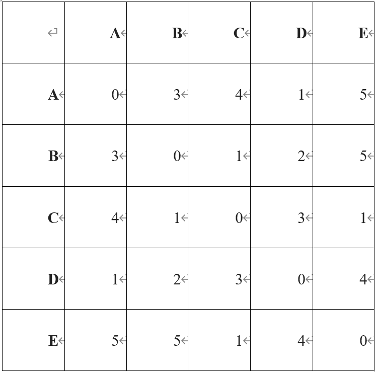
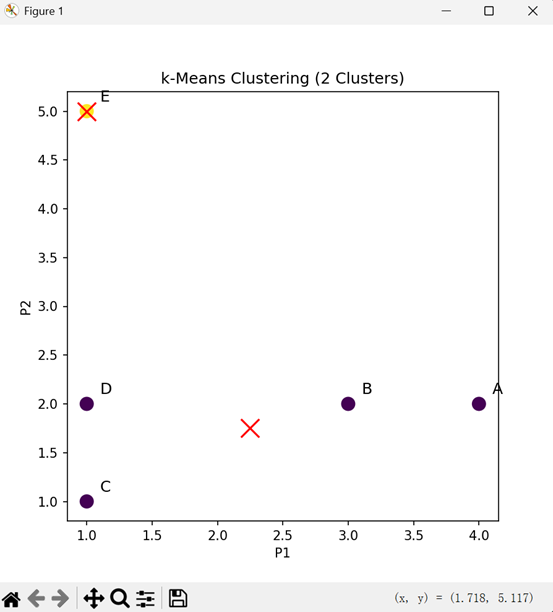

Practical Work Assignment 6
Overview:
Graph clustering analysis based on a distance matrix using the radius threshold method for clustering.
Task Requirements:
Determine the clustering relationships of objects based on the distance matrix and radius parameter R=2.
Implementation Steps:
- Construct a distance relationship graph
- Apply threshold filtering to edges
- Discover connected components

Clustering Process:
d(A,D)=1 ≤2 ➔ Same cluster
d(B,D)=2 ≤2 ➔ Same cluster
d(B,C)=1 ≤2 ➔ Same cluster
d(C,E)=1 ≤2 ➔ Same cluster
Final Clustering: {A,B,C,D,E}
Overview:
Two-dimensional data clustering analysis based on the k-Means algorithm, including the complete iteration process.
Task Requirements:
Implement the clustering process for k=2, including centroid updates and iterative optimization.
Algorithm Flow:
- Randomly initialize centroids
- Assign samples to the nearest centroid
- Recalculate centroid positions
- Iterate until convergence
| Object | P₁ | P₂ |
|---|---|---|
| A | 4 | 2 |
| B | 3 | 2 |
| C | 1 | 1 |
| D | 1 | 2 |
| E | 1 | 5 |
First Iteration:
| Object | To Centroid 1 | To Centroid 2 | Assignment Result |
|---|---|---|---|
| A | 0 | 3.16 | Cluster 1 |
| B | 1 | 2.24 | Cluster 1 |
| C | 3.16 | 0 | Cluster 2 |
| D | 3 | 1 | Cluster 2 |
| E | 4.24 | 4 | Cluster 2 |

Stable Clustering Result:
- Cluster 1: A(4,2), B(3,2)
- Cluster 2: C(1,1), D(1,2), E(1,5)